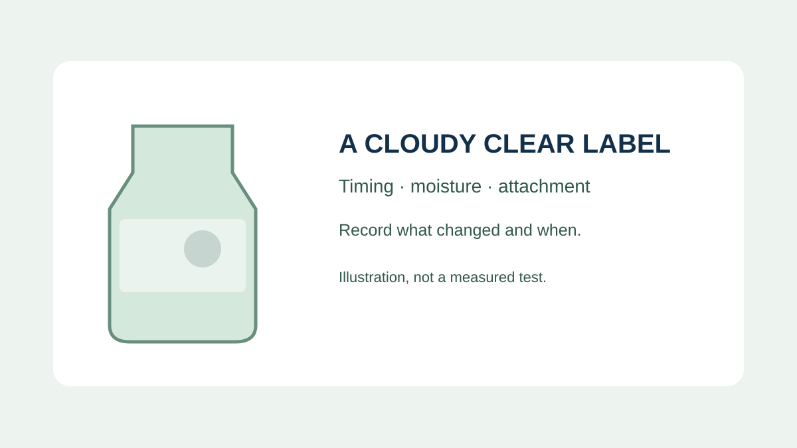
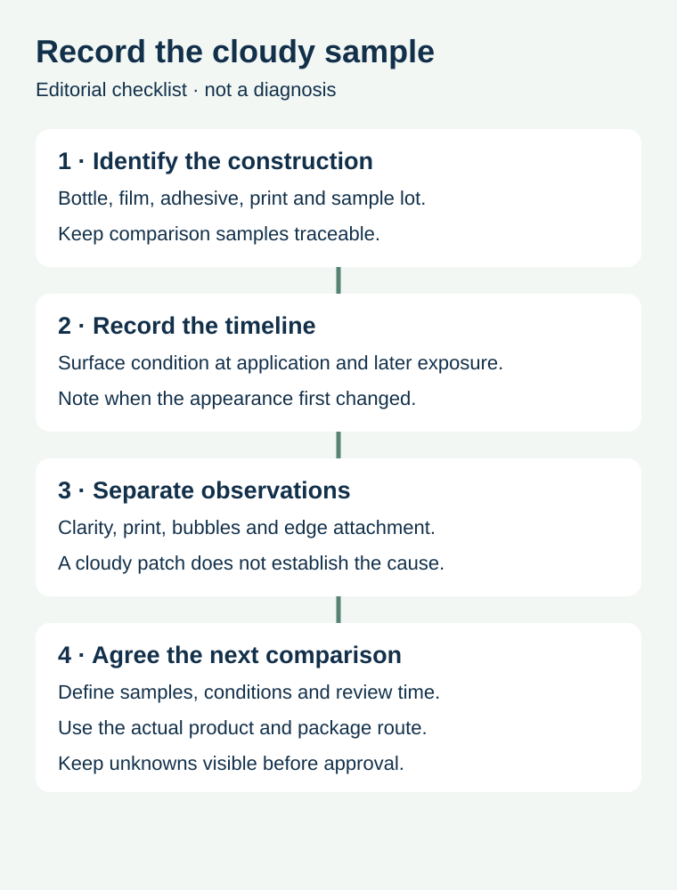

A transparent label looks clear on a dry proof. After a filled bottle goes through a cold room or wet handling, part of the label looks cloudy. Purchasing needs to know whether the appearance is acceptable, whether the label remains attached and which sample conditions are represented. One photograph rarely answers all three questions.
Record when the clouding appeared, the bottle surface at application and later exposure, then review clarity, print and attachment separately. Do not assume that every white patch has the same cause or will disappear after a fixed time.

Separate the appearance from the bond
A hazy area can affect a clear design even when the label appears attached. An edge lifting or a bubble may need a separate review of the complete label and application. Photograph the actual sample and record whether the print remains legible, the edges stay in place, and the appearance changes at the agreed inspection points. Those observations are not a laboratory diagnosis.
Avery Dennison's technical overview for a specific HDPE label system describes cloudy appearance associated with water trapped behind that construction. Its observations and examples are product-specific; they do not establish the behaviour of every adhesive or a universal recovery time.
Capture the sequence around application


Identify the bottle and label lots, the actual printable film, adhesive and finish where known, and whether the container was filled. Record whether the surface was dry, misted, wet or unknown when the label contacted it. Then record relevant later events: cold storage, movement to a warmer environment, condensation, washing or handling. Do not silently replace a missing observation with the label “refrigerated.”
| Checkpoint | Information to preserve | Question it helps answer |
|---|---|---|
| Before application | Bottle identity, surface condition and observed temperature | Was the surface represented in the proposed process? |
| At application | Label identity, application method and first appearance | Was the change already visible? |
| Later exposure | Recorded cold, wet or handling sequence and timing | When did the change appear? |
| Review | Identified photos and clarity, print and edge observations | Which requirement remains unresolved? |
| Decision | Owner, agreed criteria, sample scope and next action | What is approved and what still needs evidence? |
Compare samples with a defined purpose
Imagine a beverage producer comparing two hypothetical bottles: one labelled while dry and one after visible condensation. If the label or bottle construction also changes, any difference in appearance cannot be attributed confidently to moisture alone. Agree a comparison plan with the material supplier and production owner, using the actual package and permitted operating conditions. Keep the sample identity and review time attached to each observation.
For a wet-surface application, ask whether the proposed construction has evidence relevant to that application condition and subsequent service. Drying the outside later, changing the label or increasing pressure may affect different parts of the process; none should be presented as a proven remedy without the responsible team's assessment and a suitable trial. Do not add an unapproved cleaning or drying step to a food line from an editorial guide.
Agree what the appearance must do
For a clear label, the filled product and bottle form part of the background. Define whether a cloudy region would obscure required text, a barcode, a brand element or simply change appearance. Review the approved artwork and final package at a relevant viewing point, and have the appropriate quality owner decide the acceptance criteria. If a code is affected, a visual check or phone scan alone is not a formal verification report.
The glass-bottle condensation guide addresses when the bottle becomes wet. The wet-use sample approval guide compares sample conditions with production, while the clear versus white film guide covers the visual background decision. This checklist focuses on tracing a cloudy observation through time.
Send the sample details
Share the bottle and label references, pictures at identified times, the application surface condition, the known wet or cold sequence and the specific clarity or attachment question. Prepare a label specification inquiry; the contact page opens an email draft and lists email or WhatsApp for attachments. Actual materials, testing services and performance must be confirmed for the project.